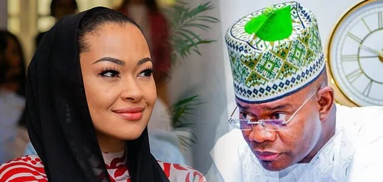

A gathering for peace that began with a funeral

A gathering planned to promote peace and security in Nigeria proceeded at Muhammadu Dikko Stadium in Katsina five days after cleric Sheikh Yahaya Masussuka was killed. His name remained on the programme as host, with a 20-minute address scheduled for 11.50 a.m. Participants cheered when he was mentioned. He was also due to receive a Peace Ambassador honour, which organisers affirmed posthumously; his eldest son was designated to accept the certificate for the family.
The assembly followed a crowded funeral the previous day, attended by religious scholars, traditional leaders and mourners who had travelled to Katsina. The Saturday event had been prepared before Masussuka’s death and brought together Muslim representatives from different traditions alongside Christian leaders. Former Sports Minister Solomon Dalung said organisers had initially planned to hold it in Jos but moved it to Katsina because of insecurity.
Speakers addressed disagreements over Masussuka’s religious teachings while calling for peaceful coexistence. Sheikh Nuru Khalid said he had differed with Masussuka on some interpretations but valued him as a person committed to peace. Other scholars urged people to resolve disputes through debate rather than force. Christian cleric Golu Jan Silas recalled Masussuka’s visit to his community in Plateau State and said the cleric had promoted coexistence there. Dalung called on followers to forgive, while representatives speaking on Masussuka’s behalf urged them to avoid violence, insults and retaliation.
Gunmen killed Masussuka and his companion in Dutsin-Ma on 26 October, according to the account of the attack. The Katsina State Police Command said two armed men on a motorcycle carried out the shooting and announced an investigation. At the time of the gathering, police had not publicly identified the attackers or announced investigative findings. Ansaru claimed responsibility in videos, but those claims had not been independently established, and no evidence linked the killing to the religious disputes. Speakers called for those responsible to face justice and urged the authorities to be allowed to investigate.
Source: Premium Times